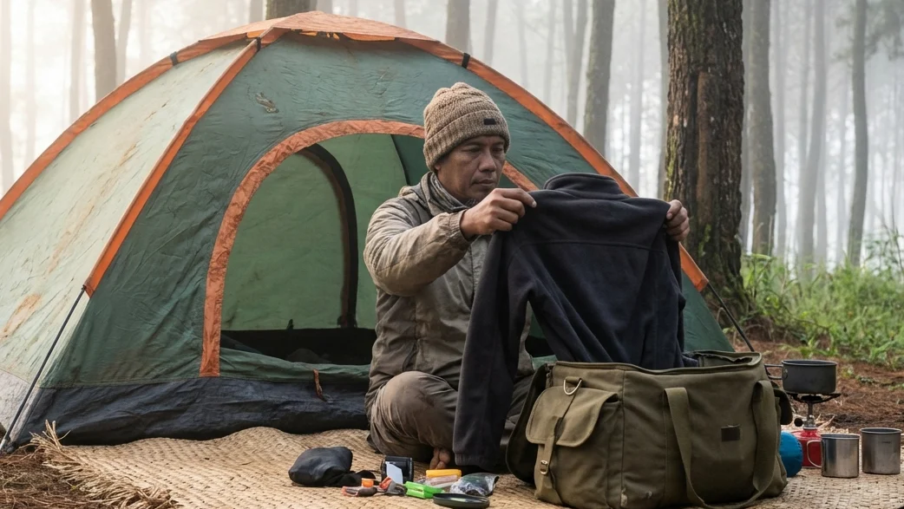

1. Packing Ransel: Seni Bertahan Hidup di Alam Bebas
Merencanakan liburan untuk melarikan diri dari kepenatan kota (healing) ke alam pegunungan selalu terdengar menggairahkan. Anda mungkin sudah membayangkan asyiknya bersantai di depan api unggun sembari menyeruput secangkir kopi panas di bawah langit yang penuh bintang. Namun, seluruh fantasi indah tersebut bisa hancur berkeping-keping dalam sekejap hanya karena satu hal sederhana: Anda salah menyusun barang bawaan (packing) di dalam tas ransel Anda.
Di alam liar, Anda tidak bisa dengan mudah berjalan ke minimarket untuk membeli sikat gigi yang tertinggal atau menyewa selimut tambahan saat tiba-tiba badai angin gunung menyerang. Segala hal yang Anda butuhkan untuk bertahan hidup (survive) wajib Anda pikul sendiri. Melalui ulasan komprehensif berjudul Panduan Menyiapkan Peralatan Pribadi Kemah: Barang Wajib Bawa Agar Tetap Nyaman Saat Petualangan ini, kita akan membongkar rahasia para pendaki profesional dalam mengorganisir isi tas mereka. Kita akan menguliti barang apa saja yang wajib dibawa, mengapa celana jeans adalah musuh terbesar di gunung, hingga seberapa penting sebuah senter kepala bagi nyawa Anda.
2. Prinsip Dasar Memilih Barang Bawaan (Fungsi di Atas Estetika)
Kesalahan paling klasik dari para wisatawan alam pemula adalah hasrat yang menggebu-gebu untuk tampil gaya (fashionable) demi keperluan konten media sosial, sehingga mereka mengorbankan ruang di dalam tas untuk barang-barang yang tidak fungsional.
Bahaya Overpacking (Membawa Barang Berlebih)
Membawa tiga pasang sepatu sneakers yang berbeda, keranjang piknik anyaman bambu berukuran besar, hingga boneka bantal untuk properti foto adalah contoh nyata dari overpacking. Mengisi ransel (carrier) dengan barang yang tidak memiliki fungsi keselamatan hanya akan menyiksa otot bahu dan lutut Anda saat berjalan menuju camping ground. Tenaga Anda akan terkuras habis, dan yang tertinggal hanyalah rasa frustrasi yang merusak mood liburan Anda secara keseluruhan.
Fokus Pada Peralatan Penunjang Keselamatan
Susunlah skala prioritas Anda. Dalam dunia petualangan alam terbuka, setiap ons berat barang yang Anda pikul harus memiliki utilitas (kegunaan) yang maksimal. Prioritaskan barang-barang yang tugasnya menjaga suhu inti tubuh Anda tetap hangat, menjamin Anda bisa bernavigasi di kegelapan malam, dan memastikan Anda bisa melakukan pertolongan pertama (P3K) jika terjadi kecelakaan kecil. Di gunung, keselamatan fisik harus selalu diletakkan jauh di atas estetika semata.
BACA JUGA (Edukasi Logistik Tenda):
3. Sistem Pakaian (Layering) dan Perlindungan Suhu
Menghadapi udara pegunungan malam hari (seperti di kawasan Batu Malang yang bisa menyentuh 12 derajat Celcius) tidak bisa hanya bermodalkan satu jaket tebal yang dipakai sembarangan.
Pantangan Mutlak: Hindari Bahan Jeans dan Katun Tebal
Hukum pertama berpakaian di alam: Tinggalkan celana jeans dan sweater katun Anda di rumah! Bahan denim dan katun murni memiliki sifat mengikat dan menyerap air (termasuk keringat dan uap embun). Saat bahan tersebut basah, ia akan menjadi sangat berat, luar biasa kaku, dan butuh waktu berhari-hari untuk kering. Celana jeans yang basah oleh embun pagi akan langsung mentransfer hawa beku tersebut ke tulang Anda, mempercepat terjadinya risiko hipotermia.
Wajib Menerapkan 3-Layer System
Gunakanlah sistem pakaian berlapis. Lapisan pertama (Base Layer) gunakan kaus berbahan dry-fit sintetik yang cepat membuang keringat dari kulit. Lapisan kedua (Mid Layer) kenakanlah jaket insulasi berbahan fleece (polar) atau rajut wol tebal yang berfungsi seperti oven pemerangkap hawa panas tubuh. Lapisan terluar (Outer Layer) adalah cangkang pelindung Anda; kenakanlah jaket parasut bertipe Windbreaker atau Hardshell (tahan air) untuk memblokir laju angin badai agar tidak menembus lapisan fleece di dalamnya.
Kupluk, Sarung Tangan, dan Kaus Kaki Ganda
Secara medis, manusia kehilangan sebagian besar suhu panas tubuhnya melalui penguapan di ujung-ujung ekstremitas (khususnya ubun-ubun kepala). Oleh sebab itu, membawa topi kupluk (beanie) rajut adalah kewajiban yang tidak bisa ditawar. Lengkapi juga pertahanan Anda dengan sepasang sarung tangan polar agar jari-jari tidak mati rasa, serta bawalah minimal 3 pasang kaus kaki panjang (sangat disarankan memakai kaus kaki dobel saat tidur di dalam tenda malam hari).

Mengenakan jaket lapisan terluar (outer/windbreaker) yang berfungsi sebagai penahan hembusan angin tajam adalah langkah wajib sebelum Anda melangkah keluar dari tenda di pagi buta.4. Sistem Tidur Pribadi (Personal Sleep System)
Meski Anda berkemah bersama rombongan atau menyewa fasilitas tenda, perlengkapan tidur yang menempel di tubuh Anda adalah tanggung jawab pribadi Anda sendiri.
Kantong Tidur (Sleeping Bag) Tipe Mummy
Tinggalkan selimut tipis ruang tamu Anda. Di alam, Anda membutuhkan Sleeping Bag khusus gunung bertipe mummy (desainnya menyempit di bagian kaki dan memiliki tudung penutup kepala). Desain yang memeluk ketat lekuk tubuh ini dirancang sedemikian rupa untuk meminimalisir adanya ruang kosong (dead space). Semakin sedikit ruang kosong di dalam kantong tidur, semakin sedikit pula kalori tubuh yang harus Anda bakar untuk menghangatkan ruang hampa tersebut. Pastikan material bagian dalam (*inner*) sleeping bag Anda terbuat dari dacron tebal atau bulu polar sintetik.
Pakaian Ganti Khusus untuk Tidur
Sangat diharamkan bagi seorang petualang untuk merebahkan diri dan tidur menggunakan pakaian yang sama dengan yang dipakai saat ia berjalan atau mendirikan tenda di siang harinya. Keringat mikroskopis yang menempel pada baju siang Anda akan mendingin di malam hari dan memicu tubuh Anda menggigil hebat. Anda wajib membawa satu setel baju ganti lengan panjang dan celana panjang kering (berbahan nyaman) yang dikemas di dalam kantong plastik kedap air (dry bag), yang mana setelan ini murni hanya boleh Anda pakai saat berada di dalam tenda menjelang tidur.
5. Alat Penerangan, Navigasi, dan Keamanan
Hutan adalah wilayah tanpa penerangan lampu jalan. Mengandalkan bulan semata adalah sebuah tindakan bunuh diri.
Senter Kepala (Headlamp) dan Baterai
Tinggalkan senter tangan konvensional yang berukuran besar. Saat Anda sedang memasak air panas di depan tenda atau mencari jalan menuju toilet umum di tengah malam, Anda membutuhkan kedua tangan Anda untuk bebas bergerak (hands-free). Senter kepala (Headlamp) adalah solusi absolut. Benda kecil yang diikatkan di dahi ini akan menyorot searah dengan arah pandangan mata Anda. Jangan pernah lupa untuk membawa sekotak baterai cadangan ekstra yang masih baru di dalam ransel Anda.
Peluit Darurat dan Kotak P3K (First Aid Kit)
Barang terkecil ini adalah yang paling sering menyelamatkan nyawa: Peluit Survival. Kalungkan peluit ini di leher atau ikat di tali dada ransel Anda. Jika tersesat di tengah kabut pekat, meniup peluit akan memakan energi jauh lebih sedikit dan suaranya lebih membelah hutan dibandingkan berteriak dengan mulut. Selain itu, Anda harus membawa dompet kedap air berisi P3K Pribadi: isilah dengan paracetamol (penurun demam), obat anti-diare (loperamide), antimo, plester luka, betadine, dan minyak kayu putih/balsam untuk menggosok dada.
6. Kebersihan Pribadi dan Logistik Darurat
Menjaga kebersihan dan pasokan kalori darurat akan membuat mood petualangan Anda tetap tinggi dan bebas dari kelaparan di tengah malam.
Peralatan Mandi Ringkas (Travel Size)
Bawalah perlengkapan mandi (toiletries) dalam wadah botol kecil (*travel size*) agar tidak menambah berat tas secara signifikan. Jangan lupakan sikat gigi lipat, sabun cair serbaguna, dan yang paling penting adalah handuk berbahan microfiber. Handuk microfiber sangat tipis, menyerap air dengan sangat kuat, dan bisa kering seutuhnya hanya dalam waktu beberapa jam saja bila diangin-anginkan di dahan pohon pinus, sangat kontras dengan handuk katun rumah yang akan membusuk jika lembap.
Camilan Darurat Berkalori Tinggi
Jangan mengandalkan waktu makan besar (nasi) semata. Bawalah selalu camilan penambah kalori instan di saku jaket Anda, seperti sosis sapi, kornet kaleng mini, telur matang, cokelat batang, madu sachet, atau kacang-kacangan. Jika sewaktu-waktu di tengah malam Anda tiba-tiba terbangun dan tubuh mulai menggigil kedinginan, itu adalah tanda tubuh Anda kehabisan kalori. Segera makan cokelat atau madu dan buatlah minuman jahe panas untuk mengembalikan suhu inti tubuh Anda.
7. Solusi Praktis Jika Tidak Memiliki Tenda Sendiri
Jika melihat daftar alat esensial di atas membuat Anda merasa lelah bahkan sebelum berangkat (terutama terkait investasi membeli tenda *dome double layer* yang harganya jutaan rupiah), ada jalan keluar yang sangat brilian yang kini tersedia bagi para wisatawan urban.
Beralihlah pada layanan wisata alam berkonsep Comfort Camping yang ditawarkan oleh pengelola profesional, semisal di kawasan Batu Sunrise Camp. Di destinasi seperti ini, Anda benar-benar hanya perlu pusing memikirkan *packing* pakaian ganti, logistik darurat, dan P3K pribadi saja. Segala urusan infrastruktur berat—mulai dari tenda dome anti badai, matras spons ekstra empuk yang digelar rapi, hingga kantong *sleeping bag* yang telah di-laundry wangi—telah disediakan dan dirakit sempurna sebelum Anda tiba. Fasilitas sanitasi berupa toilet duduk permanen dan terminal colokan listrik di setiap tenda juga telah tersedia. Ini adalah manifestasi sejati dari liburan alam bebas yang anti-ribet namun tetap menyuguhkan nilai petualangan yang otentik dan asri.
8. Kesimpulan
Pada akhirnya, kesuksesan Anda dalam menaklukkan kejamnya cuaca pegunungan ditentukan pada malam sebelum Anda berangkat, tepatnya pada saat Anda sedang menyusun isi tas ransel. Berlandaskan pada pembedahan mendalam melalui Panduan Menyiapkan Peralatan Pribadi Kemah: Barang Wajib Bawa Agar Tetap Nyaman Saat Petualangan ini, kita telah menyepakati bahwa fungsi utilitas barang harus selalu mengalahkan ego *fashion*. Penguasaan atas aturan 3-Layering System, kewajiban memiliki Sleeping bag mummy, dan kemelekan terhadap First Aid Kit serta Headlamp adalah dogma tertinggi keselamatan seorang petualang. Jika keribetan meramu alat-alat berat tersebut dirasa menghalangi niat Anda, jangan ragu memanfaatkan layanan sewa tenda paket All-In di *camping ground* profesional layaknya Batu Sunrise Camp. Teliti ulang daftar checklist bawaan Anda malam ini, tinggalkan celana *jeans* tebal itu di lemari, dan bersiaplah menyambut damainya hembusan angin hutan pinus dengan rasa aman yang paripurna.